地政学
アレクサンドリアはエジプトの地中海側玄関で、カイロ、ナイルデルタ、スエズ航路、欧州と北アフリカを結びます。港と海軍、穀物輸入、エネルギー、移民の記憶が重なり、首都ではないが国家の海への呼吸を担う都市です。

🇪🇬 エジプト / 地中海 / World City Atlas
地中海に面するエジプト第二の都市。港湾、ヘレニズムの記憶、近代の多文化史、図書館、海辺の住宅、工業地帯、信仰と食の生活が重なる。
都市の骨格
アレクサンドリアは遺跡の名前だけでなく、港湾、工業、大学、海沿いの住宅、混雑する市場、夏の避暑客が同じ海岸線に並ぶ生活都市である。
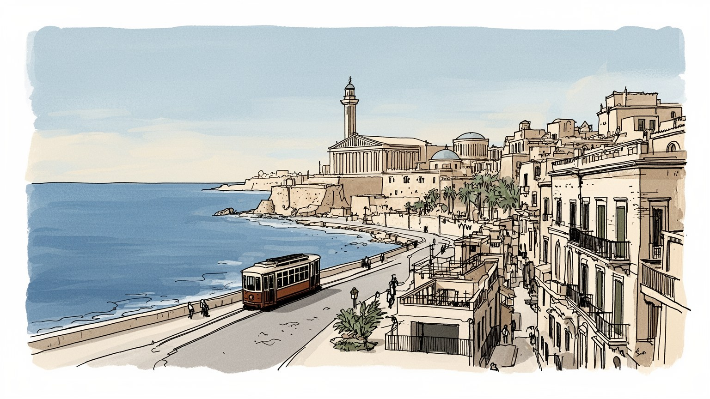
アレクサンドリアはエジプトの地中海側玄関で、カイロ、ナイルデルタ、スエズ航路、欧州と北アフリカを結びます。港と海軍、穀物輸入、エネルギー、移民の記憶が重なり、首都ではないが国家の海への呼吸を担う都市です。
港湾荷役、倉庫、石油化学、繊維、食品加工、造船修理、大学、観光が雇用を作る。岸壁の作業、配送、工場勤務、季節的な海辺商売は、古代都市の名声よりも住民の家計に近い現実として街を動かす基盤です。今も。
ギリシャ、ローマ、アラブ、コプト、ユダヤ、欧州系住民の記憶が層になり、現在はイスラムの生活暦と教会の存在が近接する。図書館、大学、カフェ、文学、海辺の散歩が、知の都市という像を日常へ戻す力です。今も
コルニーシュ、要塞、図書館、魚料理、海水浴は旅人を引き寄せるが、住民には家賃、老朽住宅、渋滞、海岸侵食、湿気、物価が切実です。観光の明るい海と生活の重い費用が、同じ通りで向き合っています。今も続く。
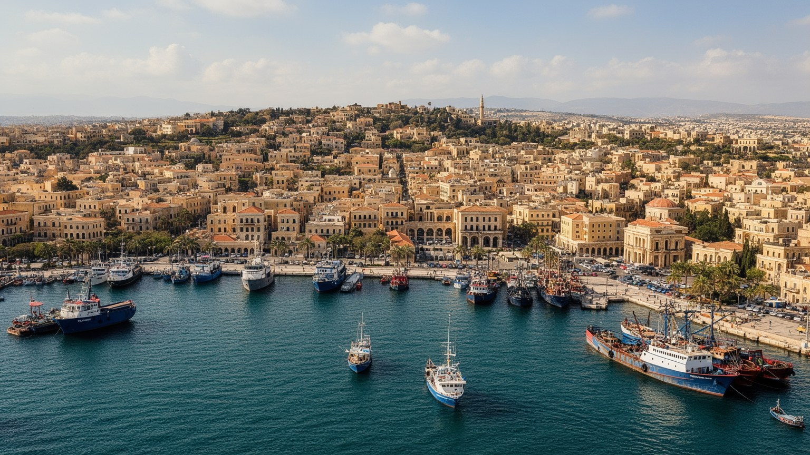
アレクサンドリアは、エジプトを地中海へ開く最も重要な窓の一つである。都市はナイルデルタの西端に近く、カイロから鉄道と道路でつながり、穀物、食品、機械、燃料、化学品、消費財を受け入れる港湾機能を持つ。港は観光の背景ではなく、国の食料安全保障、工業生産、輸入価格、雇用を左右する基盤である。岸壁、倉庫、税関、トラック、鉄道、冷蔵施設、修理工場が動かなければ、カイロやデルタの市場にも影響が及ぶ。地中海を挟んだ欧州との距離は近いが、港の現実は華やかな交易史だけではない。為替、燃料価格、通関、労働条件、港湾投資、海上保安が日常の仕事に重く関わる。アレクサンドリアを見るとき、灯台や古代都市の記憶と同じ強さで、現在の貨物の流れを読む必要がある。コンテナの数、岸壁の混雑、港へ向かう幹線道路の渋滞は、都市の生活費と直結する。海は開放感の象徴であると同時に、国家が外部から何を買い、何を売り、どのリスクを引き受けるかを映す場所である。港湾労働は潮、機械、書類、警備、夜勤に支えられ、都市の名前を世界の航路に結び続けている。さらに港は軍事と外交の意味も持ち、地中海の安全保障、移民管理、燃料供給の不安が都市の会議室と家庭のニュースに入り込む。港が止まることは、単なる物流障害ではなく、パン、燃料、仕事、通勤を同時に揺らす出来事になる。
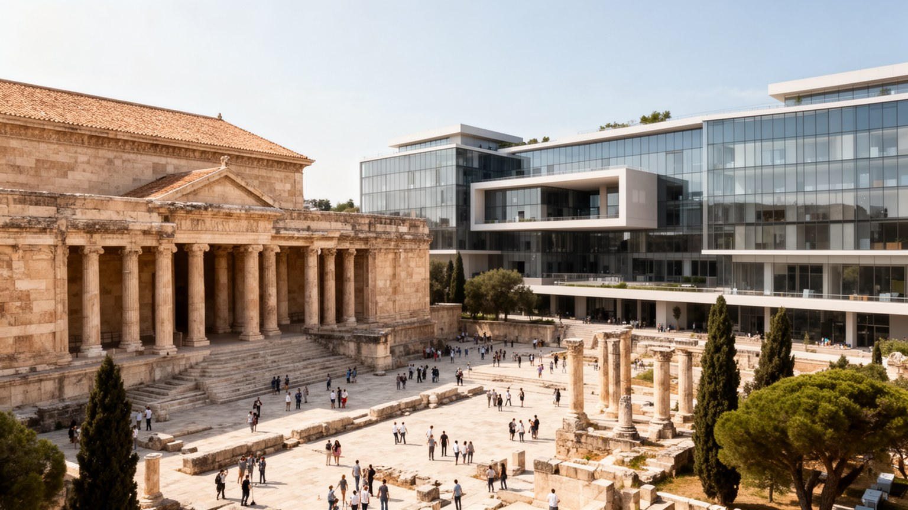
アレクサンドリアの名は、アレクサンドロスの建設、プトレマイオス朝、ヘレニズム文化、古代図書館、ファロスの灯台という世界史の記憶を強く呼び起こす。だが現在の都市で古代を読むことは、残された遺構を探すだけではない。地震、海面変動、再利用、近代建設、海中遺跡によって、古代の形は断片になっている。だからアレクサンドリアの古代性は、完全な石造都市としてではなく、街の名前、博物館、海底考古学、教育、観光の語り、住民の誇りの中で続く。ヘレニズムの記憶は、ギリシャとエジプトが混ざった過去を示す一方、帝国、王朝、植民地主義、民族主義がその記憶をどう使ってきたかも問いかける。古代都市を称える視線が強すぎると、現在の労働、住宅、信仰、貧困が見えにくくなる。アレクサンドリアを理解するには、クレオパトラや学者たちの物語と、現代の港湾労働者や学生の生活を同じ地図に置く必要がある。古代の名声は都市の資産だが、都市そのものを過去へ閉じ込めるものではない。失われた灯台や図書館は、海に向かう街の想像力を今も支え、同時に保存と開発の難しさを見せている。海底遺跡の調査や博物館展示は、都市の過去がまだ発見され続けていることを示す。けれども記憶を観光商品に変えるだけでは不十分で、学校教育や地域の言葉の中で、古代と現在をつなぎ直す作業が欠かせない。
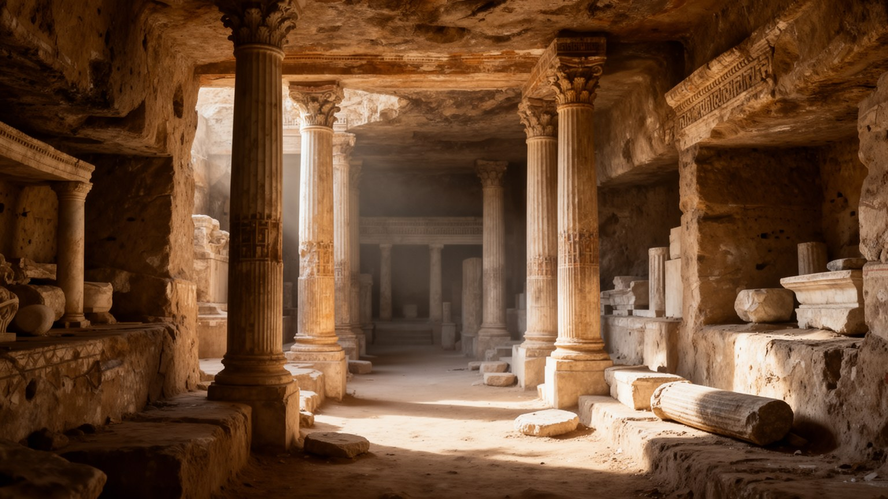
アレクサンドリア図書館は、古代世界の知の象徴として語られ、現代のビブリオテカ・アレクサンドリナはその記憶を引き受ける公共文化施設である。海に面した大きな建築は観光名所であると同時に、読書、展示、会議、研究、子どもの学び、市民活動の場でもある。図書館が重要なのは、過去の栄光を再現するからではなく、教育と公共性を都市の現在へ結び直すからである。エジプトでは若者の雇用、言語教育、デジタル情報、研究資金、出版環境が大きな課題であり、図書館や大学は知識へのアクセスを広げる役割を持つ。もちろん、巨大な文化施設だけで都市全体の教育格差が解けるわけではない。学校、家庭、公共交通、インターネット、図書の価格、表現の自由がそろって初めて、知の都市という言葉は生活に届く。アレクサンドリアの図書館を読むことは、古代の逸話をなぞるだけでなく、現代の若者がどこで学び、議論し、世界へ接続するのかを見ることである。海辺の明るい建物の内側には、国家文化政策、国際協力、市民の自習、研究者の資料探しが同居している。知の象徴は、誇りであると同時に、誰が知識へ届けるのかを問う場所である。大学の講義室、受験勉強の机、安いコピー店、オンライン講座もまた知の都市を支える。図書館の周辺に学生や研究者が集まることで、海辺の景観は観光の場から、学び直しと会話の公共空間へ変わる。
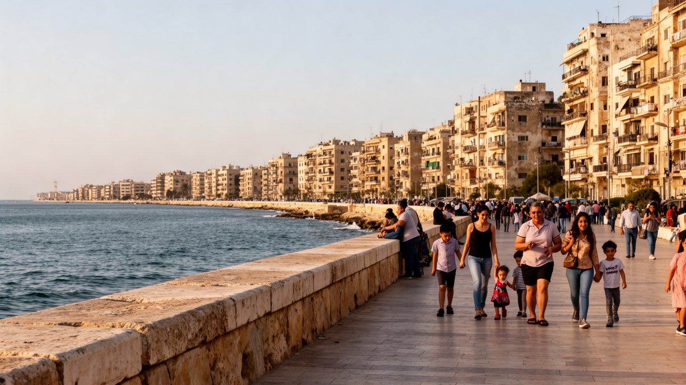
コルニーシュは、アレクサンドリアの都市像を最も分かりやすく見せる海辺の帯である。地中海に沿って曲がる道路と歩道には、集合住宅、ホテル、カフェ、魚料理店、公共施設、海水浴場、釣り人、家族連れ、若者の散歩が並ぶ。海は住民にとって涼しさと余暇の場所であり、夏には国内観光客が押し寄せる避暑地にもなる。一方で、コルニーシュは渋滞、騒音、排気、歩道の混雑、海岸侵食、老朽建物、公共空間の不足も抱える。海に近い眺望は不動産価値を高めるが、誰もがその恩恵を同じように受けられるわけではない。散歩できる海辺が残るか、座れる場所があるか、低所得の家族も海を楽しめるかは、都市の公平さを測る指標になる。コルニーシュの魅力は、観光の絵葉書と住民の日常が分離せずに重なる点にある。夕方の海風、車の列、路上の飲み物、子どもの遊び、古いアパートの洗濯物は、アレクサンドリアが港湾都市であるだけでなく、海を見ながら暮らす大都市であることを示す。美しい海岸線を守ることは、景観保全ではなく、移動、住宅、防災、余暇を一体で考える都市政策である。歩道が狭く車が強い場所では、海が近くても人は自由に近づけない。ベンチ、横断歩道、清掃、夜間照明、公共交通を整えることが、海辺を住民の共有財産にする条件になる。夏の夜に人が戻る場所ほど、都市の余白としての価値が見える。
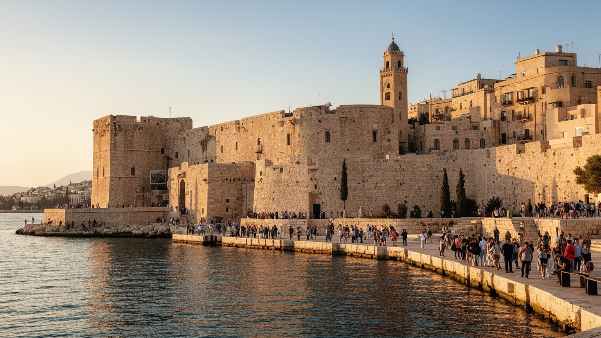
近代のアレクサンドリアは、ギリシャ人、イタリア人、アルメニア人、ユダヤ人、レヴァント商人、英国支配、エジプト民族主義が交差した港湾都市だった。十九世紀から二十世紀前半にかけて、綿花輸出、銀行、保険、倉庫、劇場、学校、カフェ、新聞が港を中心に発展し、複数の言語が街路で使われた。しかしこの多文化性は、平等で牧歌的な共存だけではない。植民地支配、特権、階層差、国籍、宗教、労働の分断を伴っていた。二十世紀半ばの戦争、イスラエル建国、スエズ危機、ナセル期の国有化と民族主義は、外国人コミュニティの多くを都市から遠ざけ、アレクサンドリアをよりエジプト国民国家の都市へ変えた。古い欧風建築や文学作品は、失われた多文化都市への郷愁を誘うが、その記憶を美化しすぎると、当時の不平等や現在の住民の生活が見えなくなる。近代史を読むとは、港が世界へ開いていたことと、その開放が誰に利益を与え、誰を周辺に置いたのかを同時に考えることだ。現在の街に残る劇場、学校、墓地、商館跡、カフェの名は、都市が何度も住民構成を変えながら続いてきた証拠である。アレクサンドリアの近代は、記憶の美しさと政治の断絶を同時に抱えている。古い建物の保存は、単にノスタルジーを守る作業ではない。移住、国有化、戦争、民族主義を経て残った都市の層を、現在の住民が使える形で読み替える試みでもある。
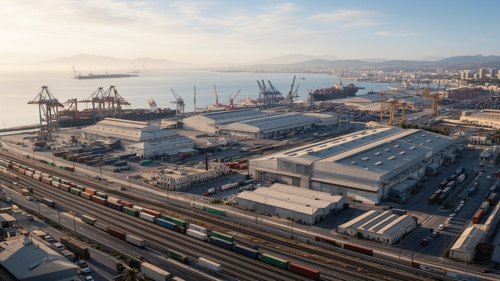
アレクサンドリアの経済は、古代遺産や海辺観光だけでは成り立たない。港湾、石油化学、食品加工、繊維、包装、造船修理、倉庫、冷蔵物流、建設資材、大学関連の仕事が、都市と周辺工業地帯の雇用を支える。西側の港湾・工業地区では、トラック、作業員、工場のシフト、危険物管理、排水、騒音が生活環境と隣り合う。輸入小麦や食用油、燃料、部品の流れは、パンの価格や工場の稼働に影響するため、港湾経済は家庭の台所にもつながる。労働者にとって重要なのは、企業名の大きさより、賃金、通勤時間、安全装備、医療、雇用の安定である。非公式な仕事や日雇いも多く、季節的な観光収入だけでは暮らしを守れない。工業都市としてのアレクサンドリアを見ると、海辺の明るさの裏に、化学物質、港湾事故、長時間労働、空気と水の負荷が見えてくる。産業は都市に所得をもたらすが、環境と健康を犠牲にすれば長く続かない。港と工場を都市の外側にあるものとして片づけず、住民の家計、食料、交通、病院、学校と結びつけて読むことが必要である。アレクサンドリアの現代性は、歴史の名声よりも、この産業の反復作業に強く表れている。若者にとって工場や物流の仕事は、技能を得る入口である一方、賃金と安全の不安も抱える。産業政策は、輸出額だけでなく、働く人が海辺の都市に住み続けられる条件まで含めて評価されるべきである。
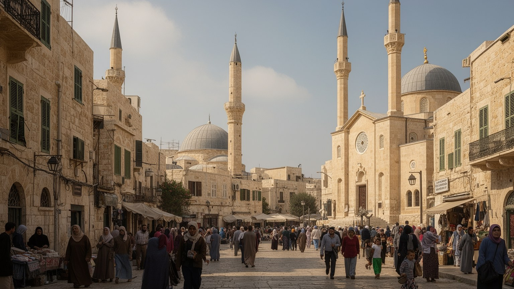
アレクサンドリアの信仰は、イスラムの礼拝とラマダン、コプト正教会の暦、古いユダヤ人共同体の記憶、聖人崇敬、墓地、家族の儀礼が重なる形で現れる。現在の多数派の日常はモスクの呼びかけ、金曜礼拝、断食月の夜、結婚式や葬儀の集まりに強く結びつく。コプト教会は少数派の信仰空間であるだけでなく、学校、慈善、家族の支援、地域の記憶を担ってきた。かつて多く存在したユダヤ人や欧州系住民の施設は、都市の多宗教史を静かに示すが、現在は記憶として残るものも多い。信仰を読むとき、宗教建築の美しさだけでなく、誰が安全に祈れるか、祝祭が交通や商売をどう変えるか、宗派間の関係が学校や職場にどう影響するかを見る必要がある。アレクサンドリアでは、海辺の開放的なイメージと、家族や地域に根ざした信仰の秩序が同時に存在する。宗教は対立の記号だけではなく、困った時の相談先、食事の配慮、貧しい人への支援、人生の節目を整える制度でもある。古代の知の都市という像に加えて、現代の祈りの時間を重ねると、都市の生活はより立体的に見える。断食月の夜には市場の開き方、交通、家族の訪問、菓子店の混雑が変わり、教会の祝祭も近隣の時間を動かす。信仰は建物の中だけではなく、食卓、路地、学校、商店の休み方にまで広がる生活のリズムである。祈りの場は、孤立しやすい都市で顔の見える関係を保つ支えにもなる。
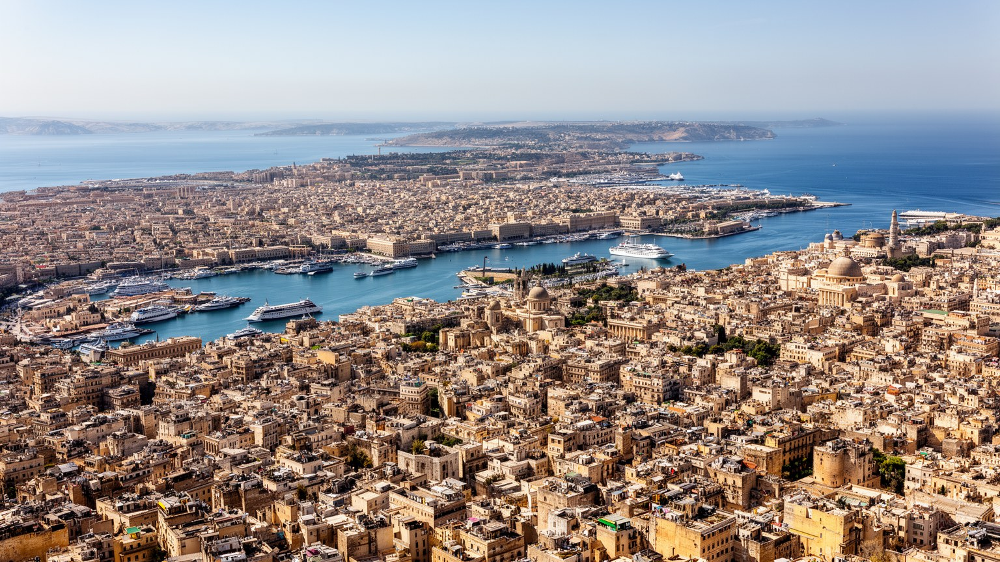
アレクサンドリアの暮らしは、海の近さがもたらす魅力と、密集住宅が抱える負担の両方でできている。コルニーシュ沿いには眺望のよい集合住宅やホテルが並ぶ一方、内陸側には古いアパート、増築された建物、狭い路地、混雑した市場、交通量の多い道路が広がる。人口増加と都市化は住宅需要を押し上げ、家賃、建物の老朽化、違法増築、エレベーターや水回りの不備、停電、排水、ゴミ処理が生活の質を左右する。海に近いことは涼しさと余暇を与えるが、湿気、塩害、冬の嵐、建物の劣化も招く。若い世代にとって住まいは、結婚、通勤、親との同居、家計を決める重大な条件である。観光客が見る海辺の明るさと、住民が毎月払う家賃や修繕費は同じ都市の現実である。住宅地では、路上の店、近所づきあい、学校、モスク、教会、ミニバス乗り場が生活圏を作る。再開発や海岸沿いの高級化が進めば、眺望の価値は上がるが、長く住んできた家族や小さな店が押し出される可能性もある。アレクサンドリアの住まいを読むことは、海を見えるかどうかだけでなく、安全に住み続けられるかを問うことである。住宅の問題は個人の選択だけではない。公共交通、建築検査、修繕融資、学校の配置、医療への距離がそろわなければ、家族は海に近い都市にいながら生活の余白を失っていく。住まいの安定は、仕事を探す力と子どもの学びにも直結する。
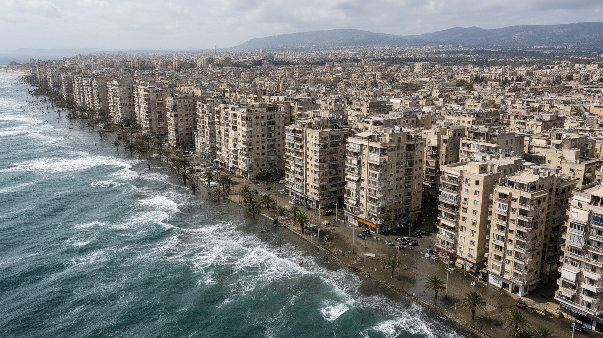
アレクサンドリアの気候リスクは、地中海の美しさと切り離せない。都市は低い沿岸部と湖、港、海岸道路、密集市街を抱え、海面上昇、海岸侵食、冬の嵐、豪雨時の排水不良、塩害にさらされる。夏はカイロより海風で過ごしやすい日もあるが、湿度、熱波、停電、混雑した住宅は健康リスクを高める。海岸線を守る護岸や砂浜の管理は、観光景観だけでなく、道路、住宅、港湾、下水、文化遺産を守る課題である。気候変動が進むほど、沿岸の低所得地区や老朽住宅ほど被害を受けやすくなる。災害は自然現象だけでなく、どこに住めるか、どの建物が修繕されるか、誰が警報を受け取れるかという社会の差を露出させる。アレクサンドリアの気候適応は、海を壁で封じるだけでは足りない。排水、公共交通、緑地、涼める場所、建物補修、避難情報、港湾の継続性を一体で考える必要がある。古代の遺跡や海辺の通りを守ることは、住民の健康と雇用を守ることでもある。海は都市の魅力であり、同時に都市の弱点を毎年試す力でもある。コルニーシュを歩く心地よさの下に、この脆さを読み取る視点が必要である。気候対策は将来の抽象論ではなく、今年の嵐、今月の排水、今日の暑さへの備えである。観光客が楽しむ海景も、住民が暮らす建物も、同じ海から恩恵と危険を受けている。守るべきものは景色だけでなく、住民が戻れる日常である。
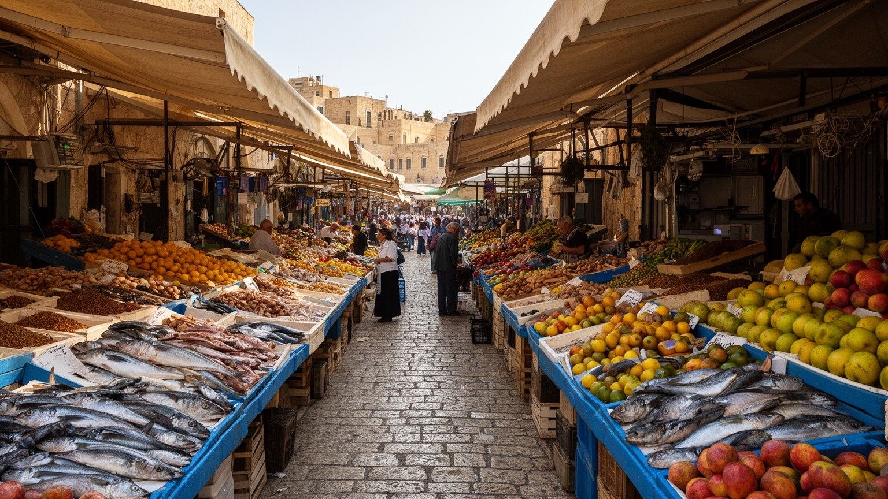
アレクサンドリアの食文化は、海と港とエジプトの日常食が交わるところにある。魚介、エビ、イカ、ムール貝、焼き魚、揚げ魚、米、パン、フール、タアメイヤ、コシャリ、甘い菓子、濃い茶は、海辺の食堂から家庭の食卓まで幅広く現れる。魚市場や港に近い店では、観光客向けの華やかな皿と、住民が家族で食べる手頃な料理が隣り合う。地中海の名を持つ都市だからといって、食が優雅な余暇だけで成り立つわけではない。漁業、冷蔵物流、輸入小麦、燃料価格、補助金、外食の人件費、家庭内の調理労働が、毎日の味を支える。夏の海辺ではアイスクリームや飲み物、軽食の屋台が増え、ラマダンには断食明けの食卓と夜の外出が街の時間を変える。食は観光の楽しみであると同時に、物価上昇がすぐに家計へ響く敏感な領域である。アレクサンドリアを食から読むと、港の国際性、海の資源、エジプトの主食政策、家族の集まりが一つにつながる。魚の鮮度やパンの価格は、都市の豊かさを測る身近な指標である。海を眺める食事の明るさの裏には、働く人の早朝、仕入れ、調理、片付け、移動が積み重なっている。食堂での会話は、天気、仕事、サッカー、物価、家族の予定を結びつける。皿の上の魚とパンは、港湾、漁場、補助金、家庭の時間を一度に映す都市の小さな地図である。食の記憶は、海辺で育った人の都市への愛着にもなる。